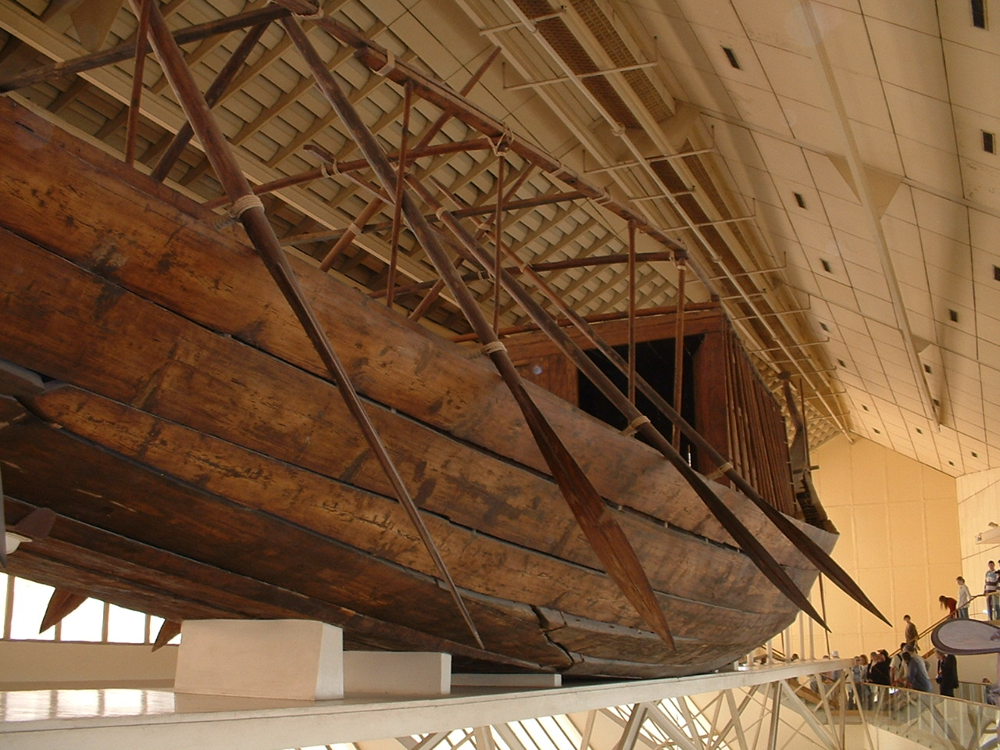
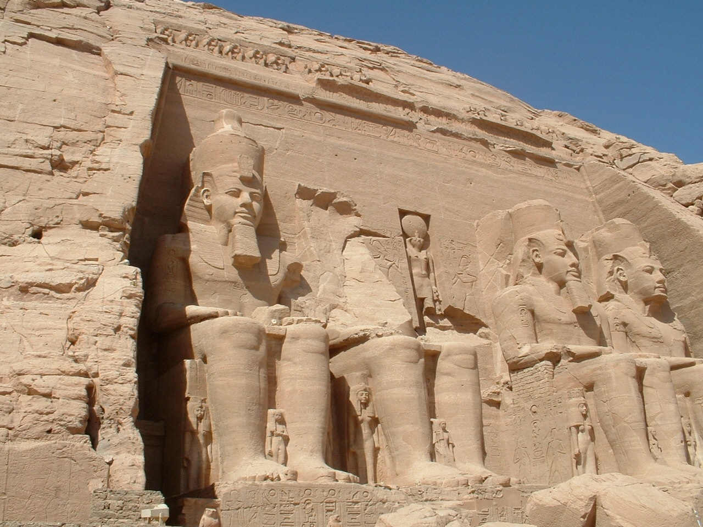

We went to the Egypt this past spring for a three week vacation. We thought you would like to see some of our awesome pictures. We took many photographs, but these were two of the most fascinating.
The Khufu ship is an intact full-size boat from Ancient Egypt that was buried in a pit at the foot of the Great Pyramid of Giza around 2500 BC. The ship was almost certainly built for Khufu (King Cheops), the second pharaoh of the Fourth Dynasty of the Old Kingdom of Egypt. It is an unbelievable sight to see.
It is not certain how the ship was used. It was thought to be a ritual vessel for the king's ride to the heavens after death. However, the ship also seems to have been in the water at one point, so it may have had more than a symbolic use.

The temples at Abu Simbel are two massive rock temples in Nubia, which is in the southern part of Egypt. The two temples were originally carved out of the mountainside during the reign of Pharaoh Ramesses II (Ramesses the Great) in the 13th century BC, as a lasting monument to himself and his queen Nefertari.
The building of the Aswan High Dam on the Nile River resulted in the creation of Lake Nasser. Because of this lake, the temples were in jeapordy of being submerged and lost forever. The relocation of the temples began in 1964 with a worldwide effort using a multinational team of experts.